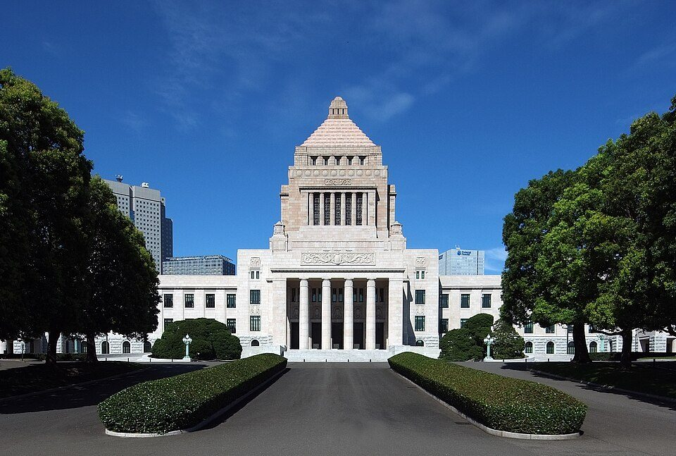
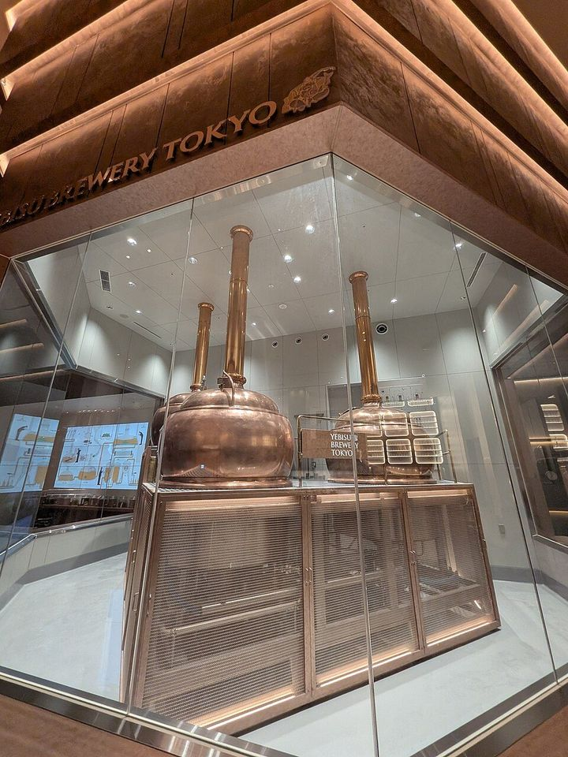
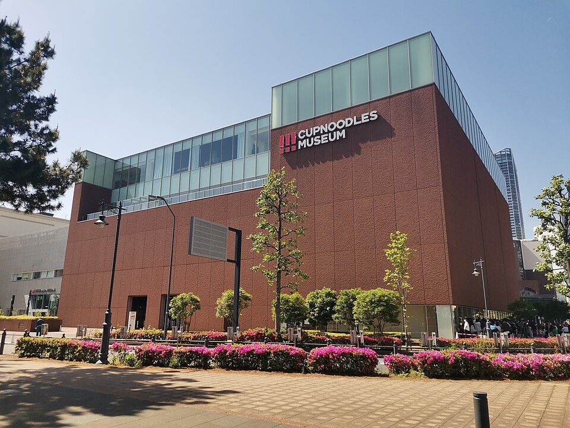
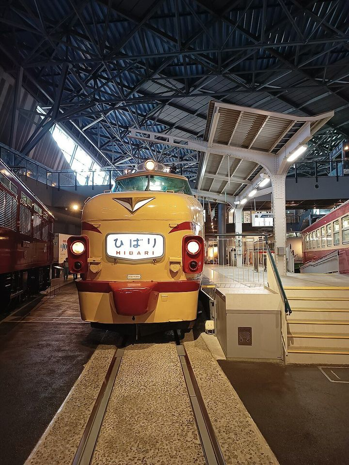
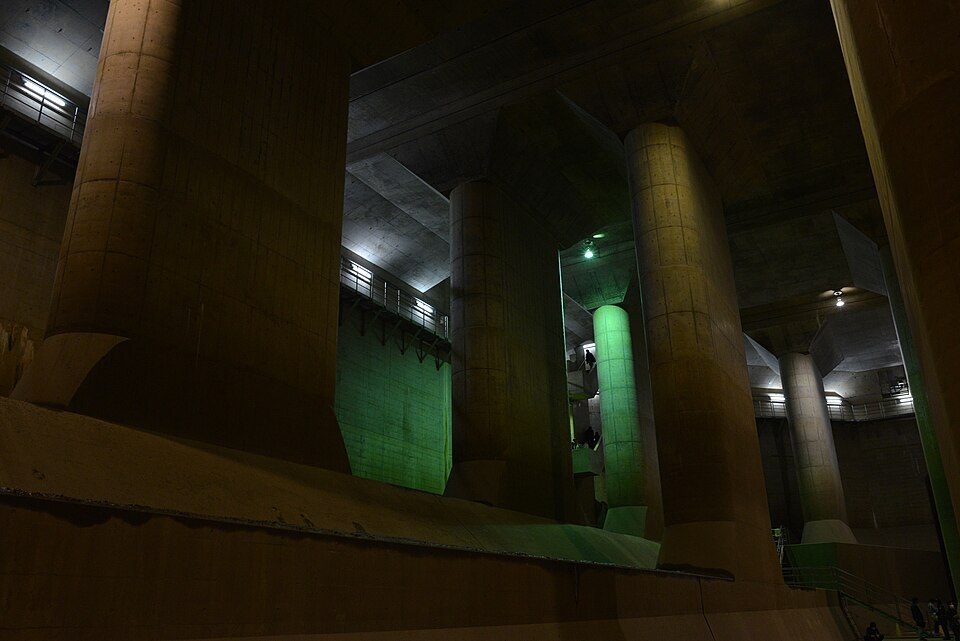

関東の工場見学・社会科見学：東京・神奈川を中心に、料金・予約・試飲と、国の施設の見学（2026年版）
要点まとめ
関東には、ビールやお菓子の工場のほか、国会や日本銀行、お札の工場など、国の仕事の現場を見学できる場所がたくさんあります。この記事では、東京・神奈川を中心に、埼玉・千葉・茨城・群馬の施設を「少し足を延ばすなら」として加え、料金・予約・年齢の条件を、各施設の公式の案内で調べてまとめました。料金は大人1人分です。ページに「税込」と書かれていない料金は「税の表記なし」としています。施設の順番は、おすすめの順位ではありません。

条件から選ぶ
見学先は、「無料か」「予約がいるか」「土日に行けるか」「子どもが参加できるか」で絞ると選びやすくなります（筆者の提案）。条件ごとの候補は次のとおりです。くわしい条件は、各章のカードにまとめました。
| 条件 | 東京・神奈川 | 少し足を延ばすなら |
|---|---|---|
| 無料 | 森永 鶴見工場[2]、味の素 川崎工場[3]、崎陽軒 横浜工場[4]、マヨテラス[12]、日産 横浜工場[13]、京急ミュージアム（一部の体験は有料）[14]、日本銀行 本店[8]、貨幣博物館[15]、国立印刷局 東京工場[9]、お札と切手の博物館[16]、皇居一般参観[17]、東証Arrows[18]、気象科学館[7]、東京都水道歴史館[19] | キッコーマン もの知りしょうゆ館[20]、造幣さいたま博物館[21]、SUBARU 矢島工場[22] |
| 予約なしで行ける | 国会（9名以下）[5][23]、迎賓館の本館・庭園[6]、気象科学館[7]、東証Arrowsの自由見学（1〜9名）[18]、皇居（当日の整理券）[10] | 造幣さいたま博物館（19名まで）[21]、鉄道博物館（当日券あり）[24]、JAXAの展示館[25] |
| 土日に行ける | 衆議院の参観[23]、迎賓館（原則水曜休館）[26]、皇居（土曜）[10]、キリン横浜（月曜休館）[27]、YEBISU（火曜休館）[28]、カップヌードル（火曜休館）[29]、崎陽軒・味の素（土曜）[4][30]、京急ミュージアム（火曜休館）[14]、三菱みなとみらい技術館（火・水休館）[31]、地下鉄博物館（月曜休館）[32] | 鉄道博物館（火曜休館）[24] |
| 平日だけ | 森永[2]、マヨテラス（土曜は臨時開館の場合あり）[12]、日産[33]、日本銀行 本店[8]、印刷局 東京工場（火・木）[9]、参議院[5]、東証Arrows[18] | キッコーマン[20]、造幣さいたま（月・火・木・金）[21] |
| 未就学児と | 味の素「クノール」スープコース（2歳以上）[30]、カップヌードル（高校生以下は入館無料）[29]、三菱みなとみらい技術館（未就学児は無料）[31]、東証Arrows（年齢制限なし）[18] | 鉄道博物館（幼児の料金あり）[24] |
| 20歳以上で試飲 | キリン横浜工場[27]、YEBISU BREWERY TOKYO[28]、サントリー 東京・武蔵野（料金は2024年の発表時点）[34] | アサヒ スーパードライ ミュージアム[35] |
| 本人確認書類が要る | 日本銀行 本店[8]、国立印刷局 東京工場[9]、皇居一般参観[10] | — |
出典: 東証Arrows[18]、味の素[30]、森永[2]、マヨテラス[36]、国立印刷局[9]、外郭放水路[37]、日本銀行[8]、最高裁判所[11]。ビールの試飲はキリン[27]・YEBISU[28]・アサヒ[38]の案内による。
ビール工場（20歳以上は試飲つき）
ビール工場の見学は、製造の説明のあとに試飲ができるのが特徴です。関東の主なツアーの料金を比べると、次のとおりです。
サントリー 東京・武蔵野は、今の料金を確かめられなかったので入れていない
| 施設 | 20歳未満の扱い |
|---|---|
| キリン 横浜工場 | 同伴できる回がある（20歳未満の料金はページに記載なし）[27] |
| YEBISU BREWERY TOKYO | 中学生〜20歳未満1,000円、小学生以下は無料（税の表記なし）[28] |
| アサヒ（茨城・守谷） | 小学生以上300円、未就学児は無料。20歳未満だけでは参加できない[38] |
| サントリー 東京・武蔵野 | 無料（2024年3月の発表時点）[34] |
2026年10月に値上げ キリンビール 横浜工場（横浜市鶴見区）
一番搾りのツアーは約90分。参加費は1,000円（税込）[27]
- 料金
- 20歳以上1,000円（税込）[27]
- 時間
- 約90分[27]
- 予約
- 見学予約のページから申し込む[27]
- 休み
- 月曜（祝日は営業し、次の平日が休館）、年末年始[27]
- 場所
- 京急 生麦駅から徒歩約15分[39]
YEBISU BREWERY TOKYO（東京都渋谷区）
工場見学ではなく、ガラス越しに設備の一部を見るツアー[28]

- 料金
- ツアー「YEBISU the JOURNEY」大人2,000円（税の表記なし）。自由見学は無料[28]
- 時間
- ツアー約45分（試飲を含む）。自由見学は約20分[28]
- 予約
- ツアーはWEBだけ。クレジットカードで事前決済[28]
- 休み
- 火曜（祝日は翌日）、年末年始[28]
- 場所
- 恵比寿駅東口から動く歩道で徒歩5分、終点から徒歩3分[40]
料金は2024年の発表時点 サントリー〈天然水のビール工場〉東京・武蔵野（東京都府中市）
2024年4月から有料。今の料金は確認できなかった[34]
2024年3月21日の発表では、2024年4月10日から見学ツアーをリニューアルして有料にし、「ザ・プレミアム・モルツ」のツアー（90分）を1,000円（税込）、20歳未満は無料としていました[34]。見学のあとは、合計3杯まで試飲できると説明しています[34]。今回の調査では公式サイトを読み込めず、2026年11月時点の料金は確かめられませんでした。
少し足を延ばすなら：アサヒ スーパードライ ミュージアム（茨城県守谷市）
20歳以上1,000円。完全予約制で、送迎バスも予約制[35][38][44]
- 料金
- 20歳以上1,000円、小学生以上300円（税の表記なし）、未就学児は無料[35][38]
- 予約
- ネットか電話。例: 2027年1月分は2026年11月18日9:15から受付[35][38]
- 休み
- 11月26日、12月10日・17日、1月14日・28日。年末年始は12/26〜1/4[35]
- 場所
- 守谷駅から無料送迎バス（予約制）で約10分。秋葉原駅から守谷駅まで快速で32分[44]
食品・お菓子の工場
食品の工場は、無料で、予約が必要なところが多くあります。平日だけ開く工場もあるので、日程を先に確かめると選びやすくなります。
カップヌードルミュージアム 横浜（横浜市中区）
入館は大人500円（税込）。高校生以下は無料[29]

- 体験
- マイカップヌードルファクトリー1食500円。チキンラーメンファクトリーは小学生600円、中学生以上1,200円（税込）[29]
- 時間
- 10:00〜18:00（入館は17:00まで）[29]
- 休み
- 火曜（祝日は翌日）、年末年始[29]
- 場所
- みなとみらい駅・馬車道駅から徒歩8分[45]
森永製菓 MORIUM＆鶴見工場（横浜市鶴見区）
小枝やハイチュウプレミアムの製造ラインを窓越しに見る[2]
- 料金
- 無料（完全事前予約制）[2]
- 時間
- 約80分（試食・ショップを含む）[2]
- 予約
- 1か月前の1日9時から、インターネットのみ。1〜6名[2]
- 日程
- 平日だけ（土日祝・年末年始などを除く）[2]
- 場所
- 鶴見駅からバスで「森永工場前」まで約10分[2]
味の素 川崎工場（川崎市川崎区）
- 予約
- 見学希望日の1か月前の1日から2日前まで[30]
- コース
- 「クノール」スープコースは2歳以上、100分[30]
- 場所
- 京急大師線 鈴木町駅から徒歩1分[47]
崎陽軒 横浜工場（横浜市都筑区）
シウマイの製造と弁当の箱詰めを見て、試食もできる[4]
- 料金
- 無料[4]
- 時間
- 約90分（試食を含む）[4]
- 予約
- 3か月前の同日 午前0時から。1〜45名[4]
- 日程
- 火・水・金・土（毎月の月末と年末年始を除く）[4]
- 場所
- JR横浜線 小机駅から徒歩約17分[4]
キユーピー マヨテラス（東京都調布市）
- 予約
- インターネットか電話[12]
- 休み
- 土・日・祝日（土曜は臨時開館する場合がある）[12]
- 場所
- 京王線 仙川駅から徒歩7分[12]
少し足を延ばすなら：キッコーマン もの知りしょうゆ館（千葉県野田市）
しょうゆの製造工程を約45分見学。無料の完全予約制[20]
- 時間
- 約60分（ビデオ約15分・製造工程の見学約45分）[20]
- 予約
- 完全予約制。当日の予約はできない[20]
- 休み
- 土日祝、毎月第4月曜（祝日は翌日）など[20]
- 場所
- 東武アーバンパークライン 野田市駅から徒歩約3分[20]
車・鉄道・ものづくり
日産 横浜工場（横浜市神奈川区）
- 日時
- 月・火・木・金の10:00〜12:00と13:45〜15:45（水曜はオンライン見学）[33]
- 人数
- 各回最大35名。原則2名以上[33]
- 予約
- 予約サイトから。受付期間は基本、毎月1日〜10日と案内している[33]
- 場所
- JR 新子安駅・京急新子安駅から徒歩約17分[33]
三菱みなとみらい技術館（横浜市西区）
大人500円。未就学児と65歳以上は無料[31]
- 料金
- 大人500円、中・高校生300円、小学生200円（税の表記なし）[31]
- 時間
- 平日10時〜15時（入館は14時30分まで）、土日祝10時〜16時[31]
- 休み
- 火曜・水曜（祝日は翌日）、年末年始[31]
- 場所
- みなとみらい線 みなとみらい駅から徒歩3分[51]
京急ミュージアム（横浜市西区）
入館は無料。運転シミュレーションなどは有料[14]
- 体験
- 鉄道シミュレーション1回500円、マイ車両工場1台1,000円（どちらも税込・事前予約制）[14]
- 時間
- 10:00〜16:30[14]
- 休み
- 火曜（祝日は翌日）、年末年始[14]
- 場所
- 横浜駅東口から徒歩約7分[14]
地下鉄博物館（東京都江戸川区）
東西線の葛西駅の高架下。大人220円（税込）[32]
- 料金
- 大人220円、こども（満4歳以上中学生まで）100円（税込）[32]
- 時間
- 10:00〜17:00（入館は16:30まで）[32]
- 休み
- 月曜（祝日・振替休日は翌日）、年末年始（12/30〜1/3）[32]
- 場所
- 東京メトロ東西線 葛西駅から徒歩1分[52]
少し足を延ばすなら：鉄道博物館（さいたま市大宮区）
一般は当日1,600円。前日までの前売なら1,500円[24]

- 料金
- 当日券で一般1,600円、小中高生600円、幼児（3歳以上未就学児）300円（税込）[24]
- 時間
- 10:00〜17:00（最終入館16:30）[24]
- 休み
- 火曜、年末年始[24]
- 場所
- JR大宮駅からニューシャトルで「鉄道博物館駅」、徒歩1分[53]
少し足を延ばすなら：SUBARU 矢島工場（群馬県太田市）
最終組立工程を見学できる。無料で約1時間45分[22]
- 予約
- 一般・個人は60日前の午前10時から20日前まで[22]
- 内容
- ビジターセンター、最終組立工程の見学、VR工場見学[22]
国の施設・公共・インフラ（社会科見学）
国会・迎賓館・日本銀行など、国の機関の建物や仕事の現場も見学できます。予約なしで入れる所と、予約や名前の登録、本人確認書類が必要な所があります。
国会議事堂（東京都千代田区）
迎賓館赤坂離宮（東京都港区）
本館と庭園は申込み不要。一般1,800円[6]
- 料金
- 本館・庭園で一般1,800円、大学生1,000円、中高生500円、小学生以下無料（税の表記なし）[6]
- 時間
- 10:00〜17:00（本館の最終受付は通常ルートで16:00）[6]
- 休み
- 原則、水曜（祝日は翌平日）と年末年始[26]
- 場所
- 四ツ谷駅の赤坂口から徒歩約7分[54]
日本銀行 本店（東京都中央区）と貨幣博物館
本店見学は無料の予約制。小学5年生以上が対象[8]
- 本店
- 月〜金、約60分。地下金庫・旧営業場・展示室を案内つきで見る[8]
- 予約
- 90日前の10時から原則5日前まで[8]
- 登録
- 見学日の1か月前までに、全員の氏名を登録する[8]
- 博物館
- 貨幣博物館は無料。9時30分〜16時30分、月曜休館（祝休日は開館）[15]
国立印刷局 東京工場とお札と切手の博物館（東京都北区）
お札を印刷している作業場を、ガラス窓越しに見られる[9]
- 料金
- 工場見学も博物館も無料[9][16]
- 工場
- 毎週火・木（祝日・年末年始を除く）、10時00分と13時40分から約90分。定員40人[9]
- 予約
- 2か月前の月の初営業日9時00分から2週間前まで[9]
- 対象
- 原則、小学生以上[9]
皇居一般参観
入場無料。当日は桔梗門前の整理券でも参加できる[17][10]
- 回数
- 午前1回・午後1回。各回200人まで[10]
- 休み
- 日曜・月曜・祝日（土曜の祝日は実施）、7月1日〜9月30日の午後、12月28日〜1月4日[10]
- 申込み
- オンライン（参観希望月の前月1日午前5時から4日前まで）、郵送・窓口、当日の整理券[10]
- 注意
- 本人確認書類が必要。コピーは不可[10]
次回は12月23日 最高裁判所の一般見学（東京都千代田区）
次回は2026年12月23日。高校生以上が対象[11]
- 日時
- 2026年（令和8年）12月23日（水）午前9時30分（受付開始は9時10分）[11]
- 申込み
- 電話。個人（1〜9名）は12月9日9時から、団体は11月25日9時から[11]
- 時間
- 50分程度。全部で80名まで[11]
東証Arrows（東京証券取引所）
見学も株式投資体験もすべて無料[18]
- 自由見学
- 9:00〜16:30（最終入館16:00）、約30分。1〜9名は予約不要[18]
- ツアー
- 案内付き見学ツアー約60分（1日4回）。90日前の午前9時ごろから4日前までネットで予約[18]
- 対象
- 自由見学とツアーは年齢制限なし[18]
- 休み
- 土日祝・年末年始[18]
気象科学館（東京都港区）
無料・予約不要で、午前9時〜午後8時まで[7]
- 休み
- 毎月第2月曜・火曜（月曜が祝日なら火・水）。8月は休館日なし[7]
- 場所
- 気象庁の2階。虎ノ門ヒルズ駅A2a出口から徒歩4分[7]
東京都水道歴史館（東京都文京区）
入館は無料。御茶ノ水駅から徒歩約8分[19]
- 時間
- 9:30〜17:00（入館は16:30まで）[19]
- 休み
- 毎月第4月曜（休日は翌日）、年末年始（12月28日〜1月4日）[19]
少し足を延ばすなら：造幣さいたま博物館（さいたま市大宮区）
硬貨と勲章をつくる工程を、ガラス越しに無料で見る[21]
- 日程
- 月・火・木・金（祝日・年末年始を除く）、9時〜16時30分（入館は16時まで）[21]
- 予約
- 自由見学は19名まで不要。ガイドツアー（約90分）は予約[21]
- 場所
- さいたま新都心駅の東口から徒歩約12分[21]
少し足を延ばすなら：首都圏外郭放水路（埼玉県春日部市）
柱が並ぶ地下の調圧水槽を歩く。地下神殿コース約55分[37]

- 料金
- 地下神殿コース おひとり様1,200円（税の表記なし）[37]
- 予約
- 1か月前の同日0:00からWEBで。前日23:59まで。当日予約はない[56]
- 対象
- 未就学児は大人同伴でも不可。中学生以下は大人の同伴が必要[37]
- 場所
- 東武アーバンパークライン 南桜井駅から、タクシーで通常10分ほど[57]
少し足を延ばすなら：JAXA 筑波宇宙センター（茨城県つくば市）
宇宙飛行士養成エリアと「きぼう」の管制室を見る[58]
- 料金
- 一般（18歳以上）500円（税込）。高校生以下・18歳未満は無料[58]
- 時間
- 約1時間10分。11:30と15:00の回[58]
- 予約
- WEB完全予約制。個人の2027年1月分は12月1日0:00から[58][25]
- 場所
- つくば駅から関鉄バスで「物質材料研究機構」、徒歩1分[59]
横浜・川崎の「産業観光」
神奈川県観光協会の観光サイトは、京浜臨海部の工場夜景や工場見学を「産業観光」として紹介する特集を載せています[60]。川崎市川崎区は、臨海部の6社の現場を公開する「川崎臨海部オープンファクトリー」を2026年3月25日〜4月2日に開きました。市内在住・在勤・在学の小学生以上が対象の無料の催しで、令和8年の事業は終わっています[61]。
予約・持ち物・撮影の注意と、最近の変化
| 施設 | 受付の開始 | 締切など |
|---|---|---|
| 日本銀行 本店 | 見学希望日の90日前の10時[8] | 原則5日前まで。氏名の登録は1か月前まで[8] |
| 東証Arrows（ツアー） | 90日前の午前9時ごろ[18] | 4日前まで[18] |
| 崎陽軒 横浜工場 | 3か月前の同日 午前0時[4] | — |
| SUBARU 矢島工場 | 60日前の午前10時[22] | 20日前まで[22] |
| 国立印刷局 東京工場 | 2か月前の月の初営業日9時00分[9] | 2週間前まで[9] |
| 森永 鶴見工場 | 1か月前の1日9時[2] | インターネット予約のみ[2] |
| 味の素 川崎工場 | 1か月前の1日[30] | 2日前まで[30] |
| 首都圏外郭放水路 | 1か月前の同日0:00[56] | 前日23:59まで[56] |
| 皇居一般参観（オンライン） | 参観希望月の前月1日の午前5時[10] | 4日前の23時59分まで[10] |
| JAXA 筑波（個人） | 例: 2027年1月分は12月1日0:00[25] | ツアー開始の1時間前まで[25] |
| アサヒ（守谷） | 例: 2027年1月分は2026年11月18日9:15[35] | — |
| 最高裁 一般見学（個人） | 12月23日の回は12月9日9時から電話[11] | — |
見学の日までに確かめておきたいことを、順に並べました。
- 予約
受付が始まる日を調べておく
90日前、3か月前の同日、1か月前の1日など、施設ごとに大きく違う（上の表）
- 1か月前
日本銀行は、参加する全員の氏名を登録する
登録した名前と身分証明書で本人確認をする[8]
- 数日前
キャンセルの期限を確かめる
- 持ち物
本人確認書類の原本を持っていく
- 服装
歩きやすい靴で行く
- 撮影
工場の中は撮影できないことが多い
- 試飲
運転する人は、お酒の試飲ができない
アサヒは自転車で来た人と、帰りに運転する人も対象[38]
2025〜2026年に変わったことと、これからの予定
- 2025年5月19日
SUBARU 矢島工場の予約開始が「60日前の午前10時」に
一般・個人の場合。従来は2か月前の第一営業日[22]
- 2026年8〜11月
味の素 川崎工場の「Cook Do」コース・親子コースの受付を休止
- 2026年10月1日
キリンの「一番搾りおいしさ実感ツアー」が500円→1,000円
横浜・取手を含む全国9工場（税込）[1]
- 2026年12月14日
造幣さいたま博物館が臨時休館
- 2026年12月23日
最高裁判所の一般見学
2027年1月以降は未定[11]
- 2026年12月29日〜
カップヌードルミュージアム 横浜が休館
2027年1月2日まで。1月12日〜15日も設備メンテナンスで休館[46]
- 2027年1月21日
日産 横浜工場のゲストホールが休館
- 2027年2月1日〜26日
キッコーマン もの知りしょうゆ館が臨時休館
一覧表
| エリア | 施設 | 大人の料金 | 予約 |
|---|---|---|---|
| 東京 | 国会議事堂（衆・参） | — | 9名以下は不要[5][23] |
| 迎賓館赤坂離宮（本館・庭園） | 1,800円（税の表記なし）[6] | 不要[6] | |
| 皇居一般参観 | 無料[17] | 事前申込みか当日の整理券[10] | |
| 最高裁判所 一般見学 | — | 電話で申込み[11] | |
| 日本銀行 本店 | 無料[8] | 必要[8] | |
| 貨幣博物館 | 無料[15] | — | |
| 国立印刷局 東京工場 | 無料[9] | 必要[9] | |
| お札と切手の博物館 | 無料[16] | — | |
| 東証Arrows | 無料[18] | 自由見学は1〜9名不要[18] | |
| 気象科学館 | 無料[7] | 不要[7] | |
| 東京都水道歴史館 | 無料[19] | — | |
| 地下鉄博物館 | 220円（税込）[32] | — | |
| YEBISU BREWERY TOKYO | ツアー2,000円（税の表記なし）[28] | ツアーはWEBで[28] | |
| サントリー 東京・武蔵野 | 1,000円（税込。2024年の発表時点）[34] | ネットは3日前の正午まで[43] | |
| マヨテラス | 無料[12] | 完全予約制[36] | |
| 神奈川 | キリンビール 横浜工場 | 1,000円（税込）[27] | 必要[27] |
| カップヌードルミュージアム 横浜 | 500円（税込）[29] | — | |
| 森永 MORIUM＆鶴見工場 | 無料[2] | 完全事前予約制[2] | |
| 味の素 川崎工場 | 無料[3] | 必要[30] | |
| 崎陽軒 横浜工場 | 無料[4] | 必要[4] | |
| 日産 横浜工場 | 無料[13] | 必要[33] | |
| 三菱みなとみらい技術館 | 500円（税の表記なし）[31] | — | |
| 京急ミュージアム | 無料（一部の体験は有料）[14] | 体験は事前予約制[14] | |
| 埼玉 | 鉄道博物館 | 当日1,600円（税込）[24] | 前売・当日券[24] |
| 造幣さいたま博物館 | 無料[21] | 19名まで不要[21] | |
| 首都圏外郭放水路 | 1,200円〜（地下神殿コースは税の表記なし）[37] | 必要[56] | |
| 千葉 | キッコーマン もの知りしょうゆ館 | 無料[20] | 完全予約制[20] |
| 茨城 | アサヒ スーパードライ ミュージアム | 1,000円（税の表記なし）[35] | 完全予約制[38] |
| JAXA 筑波宇宙センター | ツアー500円（税込）[58] | WEB完全予約制[58] | |
| 群馬 | SUBARU 矢島工場 | 無料[22] | 必要[22] |
関連する記事
- 関西の工場見学・社会科見学（兵庫・大阪を中心に）
- 工場見学・社会科見学の全国版（北海道・中部・広島・九州・沖縄）
今回確認できなかった点
- JAL・ANAの機体整備工場（羽田）の、一般向け見学の料金と申込み方法（公式ページを読み込めなかった）
- サントリー 東京・武蔵野の、2026年11月時点の料金
- 国会の参観と最高裁判所の一般見学の料金（今回読んだ案内のページに記載がなかった）
- キリン 横浜工場で、20歳未満の同伴者の料金
- アサヒ スーパードライ ミュージアムのツアーと、マヨテラスの見学の所要時間
- 日産 横浜工場の一般見学の年齢の条件
- YEBISU・アサヒ・三菱みなとみらい技術館・迎賓館・外郭放水路（ライトアップコース以外）の料金が税込かどうか
- 外郭放水路の新しいコースが始まった時期
- 東京都・横浜市・川崎市がまとめた、工場見学の公式の一覧
出典（61件）
閲覧日はいずれも2026年11月23日
- 2026年10月催行のツアーより、「一番搾りおいしさ実感ツアー」の参加費を改定いたします（2026年8月7日更新）（キリンビール）
- MORIUM&鶴見工場（森永製菓）
- 工場見学 よくある質問（味の素）
- 横浜工場 工場見学（崎陽軒）
- 参観案内（参議院）
- 迎賓館赤坂離宮 参観案内（内閣府 迎賓館）
- 報道発表「気象庁気象科学館における企画展の実施」（2025年8月1日、PDF）（気象庁）
- 見学のご案内（本店見学）（日本銀行）
- 東京工場 工場見学（国立印刷局）
- 皇居の施設情報と参観要領（宮内庁）
- 一般見学コース（最高裁判所）
- マヨテラス ご利用方法・アクセス（キユーピー）
- 工場見学 Q&A（日産自動車）
- 京急ミュージアム（京浜急行電鉄）
- 貨幣博物館（日本銀行金融研究所）
- お札と切手の博物館 アクセス（国立印刷局）
- 参観ご希望の方へ（宮内庁）
- 東証Arrows 見学（一般の方）（日本取引所グループ）
- 利用案内（東京都水道歴史館）
- もの知りしょうゆ館（野田工場）（キッコーマン）
- 工場見学・造幣さいたま博物館見学（さいたま）（造幣局）
- スバルビジターセンター 工場見学予約サイト（SUBARU）
- 国会参観（衆議院）の手続き（衆議院）
- ご利用案内（鉄道博物館）
- 筑波宇宙センター 予約について（JAXA）
- 迎賓館赤坂離宮 よくある質問（内閣府 迎賓館）
- キリンビール 横浜工場（キリンビール）
- YEBISU BREWERY TOKYO 利用案内（サッポロビール）
- 開館時間・料金（横浜）（カップヌードルミュージアム）
- 川崎工場 個人見学（14名以下）のご予約（味の素）
- 三菱みなとみらい技術館 開館情報（三菱重工業）
- 開館時間・入館料（地下鉄博物館）
- 横浜工場 工場見学（日産自動車）
- ニュースリリース「サントリー〈天然水のビール工場〉東京・武蔵野」見学ツアーのリニューアル（2024年3月21日）（サントリーホールディングス）
- スーパードライ ミュージアム（茨城工場）（アサヒビール）
- マヨテラス ご予約・確認（キユーピー）
- コース詳細（首都圏外郭放水路 見学会）
- アサヒの工場見学 よくあるご質問（アサヒビール）
- 横浜工場 アクセス（キリンビール）
- YEBISU BREWERY TOKYO アクセス（サッポロビール）
- サントリー〈天然水のビール工場〉東京・武蔵野（サントリー）
- 〈天然水のビール工場〉東京・武蔵野 アクセス（サントリー）
- 工場見学 Q&A（サントリー）
- スーパードライ ミュージアム アクセス（アサヒビール）
- アクセス（横浜）（カップヌードルミュージアム）
- カップヌードルミュージアム 横浜（お知らせ）（カップヌードルミュージアム）
- 川崎工場 アクセス（味の素）
- 川崎工場（工場見学）（味の素）
- もの知りしょうゆ館 年末年始 休館のお知らせ（キッコーマン）
- もの知りしょうゆ館（野田工場）27年2月 臨時休館のお知らせ（キッコーマン）
- 三菱みなとみらい技術館 アクセス（みなとみらい駅から）（三菱重工業）
- 地下鉄博物館（トップ）（地下鉄博物館）
- アクセス（鉄道博物館）
- 迎賓館赤坂離宮 アクセス（内閣府 迎賓館）
- 現場見学（予約制）（気象庁）
- お申し込み方法（首都圏外郭放水路 見学会）
- よくあるご質問（首都圏外郭放水路 見学会）
- 筑波宇宙センター 有料見学ツアー（ガイド付き）（JAXA）
- 筑波宇宙センター アクセス（JAXA）
- 大人の社会科見学！横浜・川崎の産業観光（神奈川県観光協会（観光かながわNOW））
- 川崎臨海部オープンファクトリー（令和8年事業は終了しました）（川崎市川崎区）
写真・画像の出典（6件）
- 国会議事堂（東京都千代田区）
写真: Wiiii／Wikimedia Commons（CC BY-SA 3.0） - YEBISU BREWERY TOKYO のガラス張りの醸造設備（東京都渋谷区）
写真: Syced／Wikimedia Commons（CC0） - カップヌードルミュージアム 横浜
写真: Keeezawa／Wikimedia Commons（CC0（パブリックドメイン）） - 鉄道博物館（さいたま市）に展示されている特急「ひばり」
写真: Mauricio V. Genta／Wikimedia Commons（CC BY-SA 4.0） - 迎賓館赤坂離宮の本館の正面（東京都港区）
写真: Yasu／Wikimedia Commons（CC BY-SA 3.0） - 首都圏外郭放水路の調圧水槽（埼玉県春日部市）
写真: Kunitaka NIIDATE／Wikimedia Commons（CC BY-SA 2.0）